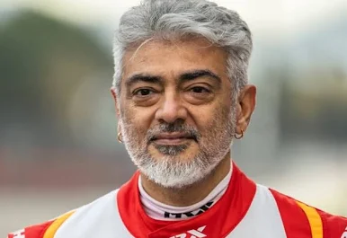

Ajith Kumar Subramaniam is an Indian actor who works predominantly in Tamil cinema.
To date, he has starred in over 63 films, and won four Vijay Awards, three Cinema Express Awards,
three Filmfare Awards South and three Tamil Nadu State Film Awards.

Trisha Krishnan is an Indian actress known for her work primarily in Tamil and Telugu cinema.
One of the highest-paid actresses in India, she has sustained a successful career as a leading actress
for over two decades in Tamil cinema.